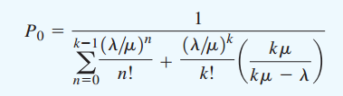

Definición.
Una línea de espera de múltiples canales se compone de dos o más canales de servicio que se supone son idénticos en función de capacidad de servicio.
En el sistema de múltiples canales, las unidades que llegan esperan en una sola línea y luego se dirigen al primer canal disponible para ser atendidas.
En esta sección se presentan fórmulas para determinar la características de operación constante de una línea de espera de múltiples canales. Estas fórmulas son apropiadas si existen las siguientes condiciones:
- Las llegadas siguen una distribución de probabilidad de Poisson.
- El tiempo de servicio de cada canal sigue una distribución de probabilidad exponencial.
- La tasa de servicios μ es la misma para cada canal.
- Las llegadas esperan en una sola línea de espera y luego se dirigen al primer canal abierto para que las atiendan.

Características de operación
Las siguientes fórmulas se utilizan para calcular las características de operación de líneas de espera de múltiples canales, donde:
- λ = tasa de llegadas del sistema
- μ = tasa de servicios de cada canal
- κ = número de canales
- Probabilidad de que no haya unidades en el sistema:
- Número promedio de unidades en la línea de espera:
- Número promedio de unidades en el sistema:
- Tiempo promedio que una unidad pasa en la línea de espera:
- Tiempo promedio que una unidad pasa en el sistema:
- Probabilidad de que una unidad que llega tenga que esperar a que la atiendan:
- Probabilidad de que haya n unidades en el sistema:


Como μ es la tasa de servicios de cada canal, κμ es la del sistema de múltiples canales.
Al igual que para el modelo de espera de canal único, las fórmulas de las características de operación de líneas de espera de múltiples canales se aplican sólo en situaciones en las que la tasa de servicios del sistema es mayor que su tasa de llegadas, en otros términos, las fórmulas se aplican sólo si κμ es mayor que λ.
PROBABILIDAD DE QUE HAYA n CLIENTES EN EL SISTEMA EN EL PROBLEMA DE LA LÍNEA DE ESPERA DE BURGER DOME
| Número de Canales (κ) | ||||
|---|---|---|---|---|
| Razón λ / μ | 2 | 3 | 4 | 5 |
| 0.15 | 0.8605 | 0.8607 | 0.8607 | 0.8607 |
| 0.20 | 0.8182 | 0.8187 | 0.8187 | 0.8187 |
| 0.25 | 0.7778 | 0.7788 | 0.7788 | 0.7788 |
| 0.30 | 0.7391 | 0.7407 | 0.7408 | 0.7408 |
| 0.35 | 0.7021 | 0.7046 | 0.7047 | 0.7047 |
| 0.40 | 0.6667 | 0.6701 | 0.6703 | 0.6703 |
| 0.45 | 0.6327 | 0.6373 | 0.6376 | 0.6376 |
| 0.50 | 0.6000 | 0.6061 | 0.6065 | 0.6065 |
| 0.55 | 0.5686 | 0.5763 | 0.5769 | 0.5769 |
| 0.60 | 0.5385 | 0.5479 | 0.5487 | 0.5488 |
| 0.65 | 0.5094 | 0.5209 | 0.5219 | 0.5220 |
| 0.70 | 0.4815 | 0.4952 | 0.4965 | 0.4966 |
| 0.75 | 0.4545 | 0.4706 | 0.4722 | 0.4724 |
| 0.80 | 0.4286 | 0.4472 | 0.4491 | 0.4493 |
| 0.85 | 0.4035 | 0.4248 | 0.4271 | 0.4274 |
| 0.90 | 0.3793 | 0.4035 | 0.4062 | 0.4065 |
| 0.95 | 0.3559 | 0.3831 | 0.3863 | 0.3867 |
| 1.00 | 0.3333 | 0.3636 | 0.3673 | 0.3678 |
| 1.20 | 0.2500 | 0.2941 | 0.3002 | 0.3011 |
| 1.40 | 0.1765 | 0.2360 | 0.2449 | 0.2463 |
| 1.60 | 0.1111 | 0.1872 | 0.1993 | 0.2014 |
| 1.80 | 0.0526 | 0.1460 | 0.1616 | 0.1646 |
| 2.00 | 0.1111 | 0.1304 | 0.1343 | |
| 2.20 | 0.0815 | 0.1046 | 0.1094 | |
| 2.40 | 0.0562 | 0.0831 | 0.0889 | |
| 2.60 | 0.0345 | 0.0651 | 0.0721 | |
| 2.80 | 0.0160 | 0.0521 | 0.0581 | |
| 3.00 | 0.0377 | 0.0466 | ||
| 3.20 | 0.0273 | 0.0273 | ||
| 3.40 | 0.0186 | 0.0293 | ||
| 3.60 | 0.0113 | 0.0228 | ||
| 3.80 | 0.0051 | 0.0174 | ||
| 4.00 | 0.0130 | |||
| 4.20 | 0.0093 | |||
| 4.40 | 0.0063 | |||
| 4.60 | 0.0038 | |||
| 4.80 | 0.0017 |